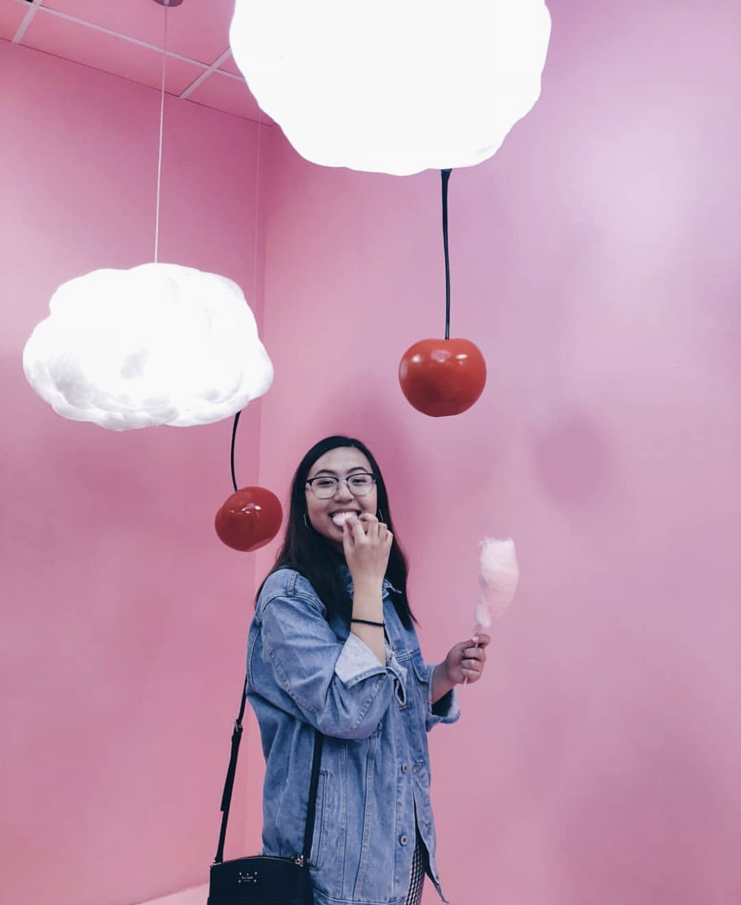

I am currently a sophomore at the University of Washington, planning to go into UI/UX. I was born in Arizona, but have lived in the Bay Area (California) for most of my life. Some of my hobbies include buying clothes, photography, singing, and eating food while watching TV. Some things that I love are listening to music while driving, The Office, all kinds of Asian food and my friends and family.
